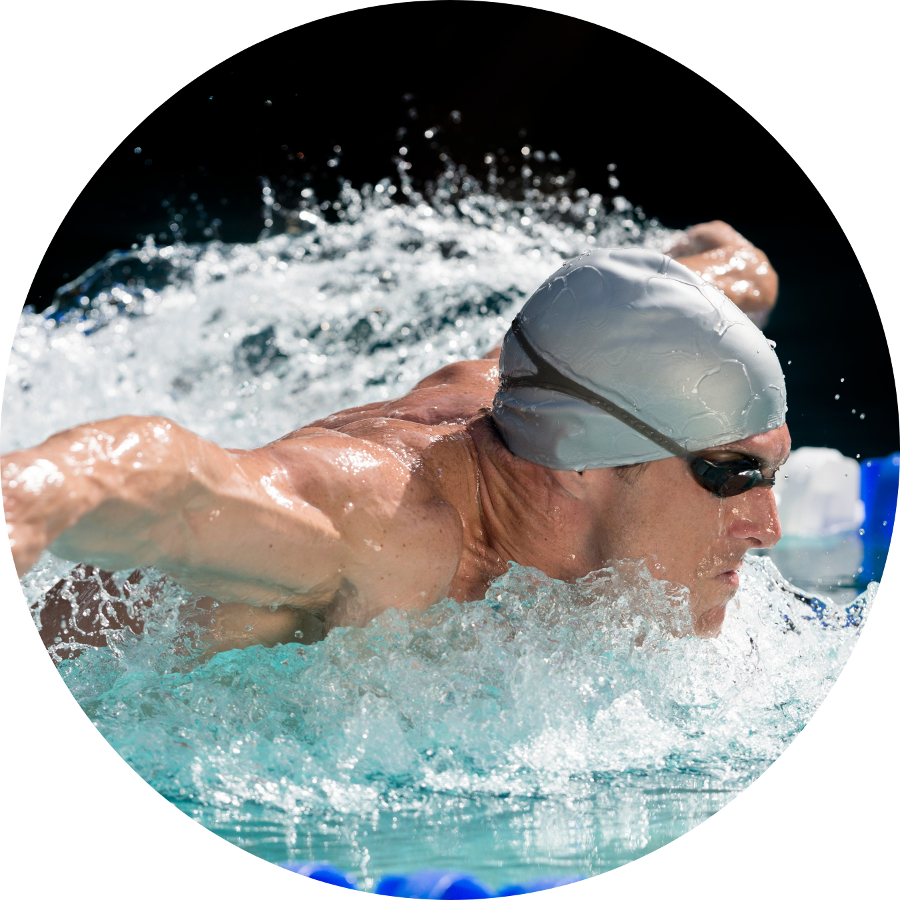

NADO BORBOLETA:
O nado borboleta é considerado um dos estilos mais técnicos e desafiadores da natação.
Os nadadores realizam um movimento ondulante das pernas, conhecido como pernada de golfinho, enquanto ambos os braços
se movem simultaneamente para a frente, saindo da água e depois mergulhando novamente. O movimento dos braços e pernas
é altamente coordenado e exige força e resistência. O nadador precisa manter o corpo na horizontal e não é permitido que
a cabeça saia da água, exceto para respirar.